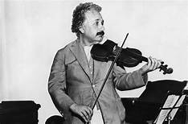
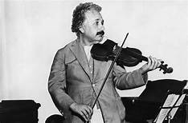
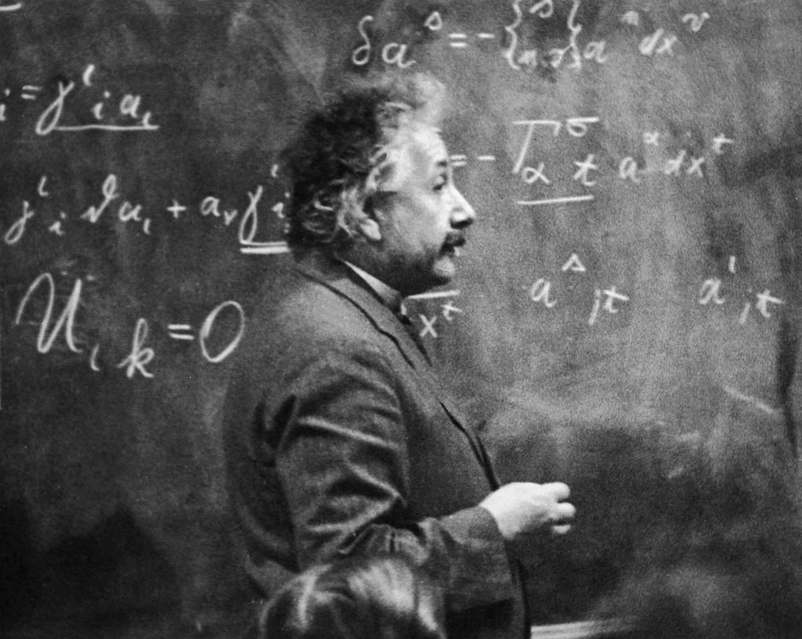
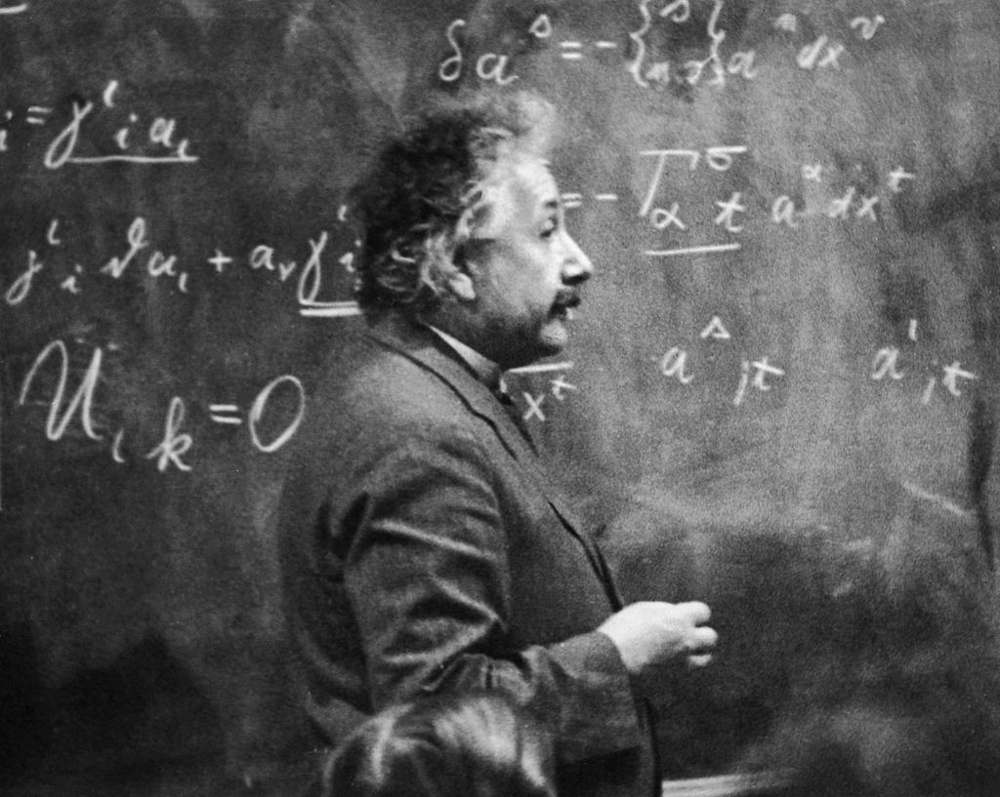

Hobbies
 

 

Albert Einstein’s hobbies were sailing, reading ,solving puzzles , playing the violin and piano.
He also wrote travel journals that are now held in the Albert Einstein Archives in Jerusalem. Einstein owned several sailboats in his lifetime. Einstein enjoyed reading and it had big influence on him. Einstein began taking violin lessons at an early age, discovering Mozart at age 13.